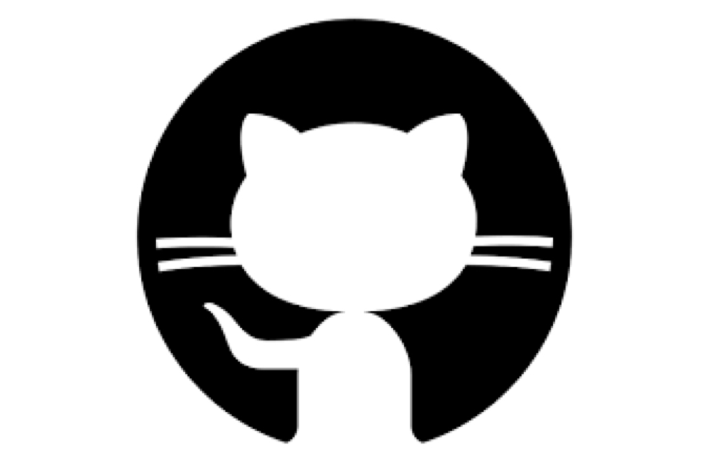

GitHub のコマンドまとめ
GitHub の基本的なコマンドです。 古い記事だと checkout などの使い方が現在と違っていたりするので、2025/06時点で正常に動作するコマンドをまとめました。
1. リポジトリを作って最初にやること
## 新しいプロジェクトで最初にやる
# clone
git clone git@github.com:アカウント名/リポ名.git
# リポに移動
cd リポ名
# 初期化
git init
2. 内容を更新する前にやること
# pull
git pull origin main
# ブランチを確認 (最初は main のみ)
git branch
# 新しいブランチを作って変更
git switch -c ブランチ名
ここまでやったら、プログラムの編集を行います。
3. 更新した内容を GitHub に反映させる
# add
git add .
# add した内容を commit
git commit -m "コメント"
# commit した内容を push
git pull origin main
git push -u origin ブランチ名 # => GitHub のページで Compare & pull request
あとは GitHub のページで操作できます。
4. main ブランチで pull
# main ブランチに変更
git switch main
# pull
git pull origin main
これで GitHub に上がっている内容と、ローカルの内容が同じになるはずです。
いちばんやさしいGit&GitHubの教本
説明が丁寧で分かりやすい本です。
GitHub だけでなく、Git についても詳しく書いてあるので、Heroku などを使う予定の人にもおすすめです。
変更を削除したりする方法については、また別でいつか書きます。